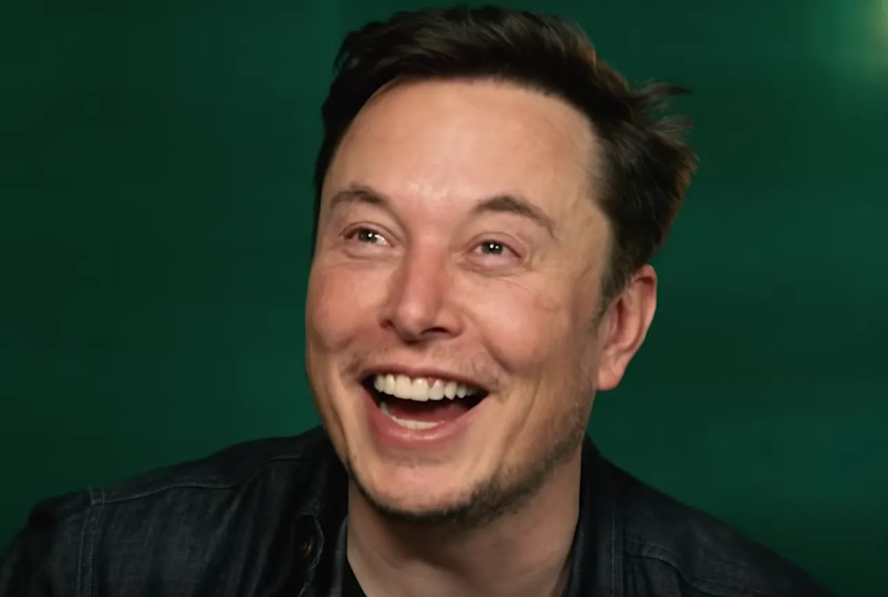

Всё в одном месте
Вся активность Илона Маска собрана в одном Telegram-канале.

Читайте все посты Илона Маска на русском прямо в Telegram: не нужно открывать X и переводить вручную.
Твиттер | X Илона Маска — Telegram-канал, в котором собраны посты и активность Elon Musk в X (Twitter): публикации, ответы, реакции, заявления и другие важные обновления.
Здесь удобно следить за тем, что пишет Илон Маск: свежие посты и ключевые новости собраны в одной ленте.
Вместо того чтобы постоянно проверять X / Twitter, можно просто открыть Telegram и увидеть всё главное в одной ленте.
Вся активность Илона Маска собрана в одном Telegram-канале.
Свежие публикации и обновления появляются без лишних действий.
Привычная лента Telegram вместо постоянного переключения между приложениями.
Простой способ не пропускать заметные посты и новости.
Telegram: https://t.me/elon_musk_voice
Подписывайтесь на канал Твиттер | X Илона Маска, чтобы следить за постами, новостями и активностью Elon Musk в удобном формате.